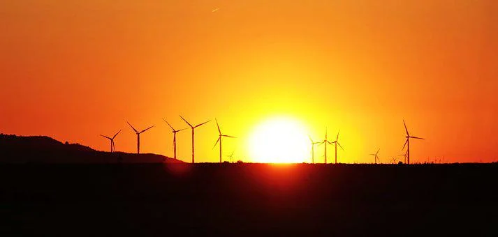

We all have studied and learned with regards to the need and importance of the environment for living creatures. The life of people on the earth relies a lot upon the environment. Simultaneously, advancement can never be left by humankind, since, in such a case that we want improvement, we will arrive at a mark, a mess where there won’t be any break. Thus, the arrangement is a manageable turn of events and this can be accomplished with the help of Environmental Engineering, which makes a master’s in environmental engineering in Germany an incredibly esteemed course.
Students who study environmental engineering in Germany go through the theoretical ideas of Environmental Science and afterward apply them to real-life engineering standards. They mean to keep a harmony between a supportable turn of events and a sound climate without making any change in the speed of the turn of events.
Constantly 2050, Germany plans to have 80% of the electric creation in the German market from sustainable assets and this is the possibility that is filling the German energy and environmental innovation industry. Since the time the national government chose to switch off all the thermal energy plants by 2022, the business has been working overwhelmed with a passion to observe arrangements as another power source. One of the most broadly accessible regular sustainable power sources is wind energy. The power produced by wind turbines is generally another way yet it has been gaining quick ground.
Over the most recent couple of years, there has been significant development in the wind business and it has prospered. One can comprehend this by the way that there have been more than 101,000 new positions made by this industry alone, clearing the way to a brilliant career for the individuals who concentrate on environmental engineering in Germany. They are delivering around 8% of the absolute power that is being utilized in Germany. The export rate of this area is around 75%. As of now, there are around 21,000 wind power stations in Germany, with a lot more being built. In the following 20 years, wind parks are set to be raised in the North Sea and the Baltic Sea. While seeking a master’s in Environmental Engineering in Germany, students represent considerable authority in one of the centralizations of the program.